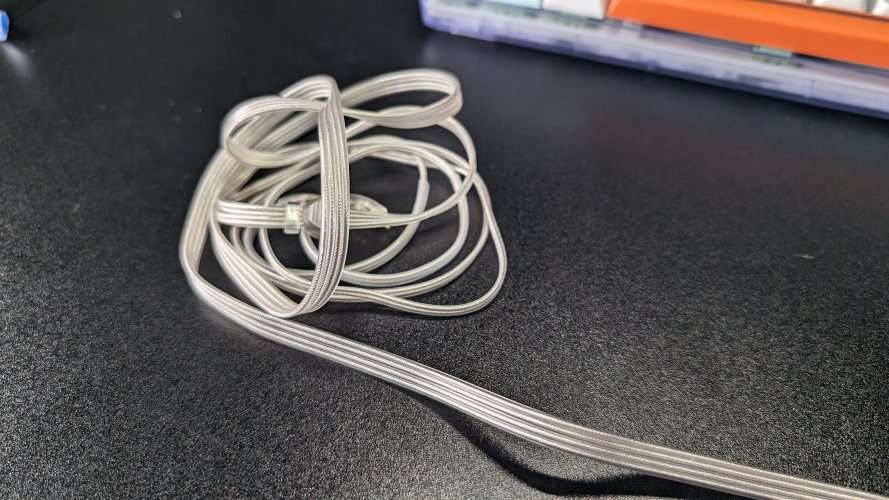

Review: 7Hz Sonus
A Worthy Contender to the Truthear Zero?
Published: April 12, 2024
Disclaimer: This unit was purchased by myself. I am also affiliated with PC Help Hub as a Content Creator.
Overview
Manufactured by 7HZ, the Sonus is a Hybrid driver IEM sporting 1BA alongside 1DD. Releasing at an MSRP of ~$60 USD, it targets the Truthear Zeros and Hexas of the world, and they do truly challenge the reign of the Truthear Zero.

Unboxing & Accessories
The unboxing experience and the amount of accessories are great for the price range. They are packed very well with a sleeve covering the main box, in which the main box opens to reveal a paper insert that greets us to the 7HZ world and their products. Under the insert are the IEMs themselves, packaged in a thick foam that ensures they arrive safely.
The accessories are very good, consisting of:
- A set of 4 filter and mesh replacements.
- A good selection of tips (7HZ coloured tips and some black and red translucent tips).
- A "leather" carry pouch that sports the 7Hz logo.
- The cable, which is a 4-core unbraided 2-pin 0.78 cable.
Although the cable looks great, it can be an issue for comfort since it's generally more rigid and less forgiving than other cables on the market. Just getting the picture below was more difficult than it should be due to the nature of this cable.
Sound Quality & Tuning
Out of the box, the 7Hz Sonus delivers a clean but somewhat uninspiring sound. It lacks the vibrant energy found in other IEMs within its price range, and vocals, in general, come across as flat – though female vocals fare slightly better than their male counterparts. Overall, there's a dullness, a lack of life in the sound that leaves me underwhelmed.
Bass
The bass on the 7Hz Sonus plays it safe. There's mid-bass punch and a touch of sub-bass rumble for depth, but it lacks the punch some may want. It's a clean, controlled bass.
Mids
The mids are decent – natural sounding and never overpowered by the bass. Vocals come through with warmth, especially female vocals, which have a bit more presence. Instruments lack a certain weight, though, and could benefit from a bit more oomph.
Highs
Highs are smooth and controlled, definitely prioritizing a non-harsh sound over shimmer and sparkle, which some like myself may not like.
Technical Performance (Techs)
Techs are where this set truly shines, with these standing out in games especially, when put up against the Truthear Zeros which have been at the forefront of "Gaming" IEMs for a short period now. These are found on sale sometimes for less than £50, in which for that much, if you need a new gaming IEM, these will most definitely be a 10/10 for you.
Pros & Cons
Pros
- Fit
- Accessories
- Price
- Great techs (gaming)
Cons
- Sound can be dull
- Lacks Sparkle in highs
- Build Quality concerns
- Cable (nitpicky)
Conclusion
The 7Hz Sonus is a strong option in the budget IEM space, particularly for its technical performance in gaming. While the tuning might feel safe for music, its comfort and price make it a noteworthy consideration.
My Rating: 3.5 / 5